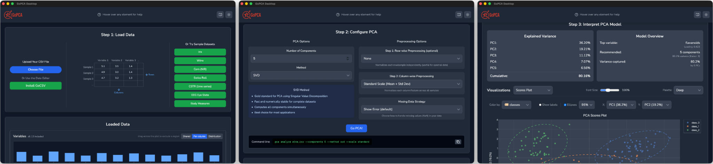
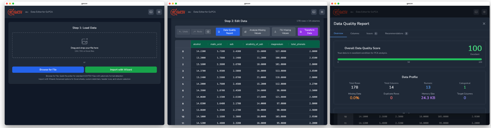

Fast, accurate Principal Component Analysis.
Desktop app and command-line tool.
LOCAL PROCESSING • MIT LICENSE • OPEN SOURCE

DESKTOP APPLICATION
Interactive visualizations.
Export publication-ready figures.
# Quick analysis $ pca analyze data.csv $ pca validate spectra.csv $ pca transform model.json # Flexible output formats # JSON, CSV, or text
COMMAND-LINE TOOL
Automation-ready CLI.
CSV input format.
JSON output format.

CSV EDITOR
Prepare data for PCA analysis.
Handle missing values and outliers.
Import CSV files with numerical data.
pca analyze --components 3 your-data.csv
Configure components and algorithm. View results instantly.
Execute PCA computationAll computations run on your machine. No external dependencies.
Full source code available. Modify and redistribute freely.
SVD, NIPALS, and Kernel PCA. Validated against scikit-learn.
No telemetry. No analytics. No data collection.